‹ Contents
Chapter 02
The Work
Seven projects, from his own house to a national library. What each one was testing, and what it teaches us.
Index
01 · Roof-Roof House, Selangor Built 1984
A roof above the roof.
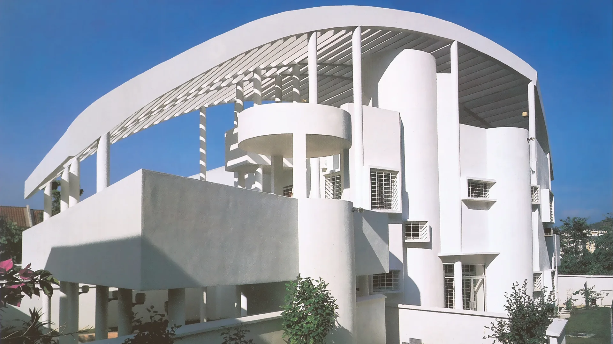
Click any image to enlarge
01
A filter, not a lid
The curved upper structure is a solar screen floating clear of the house. Its louvres are angled to let in soft morning light from the east and block the hard afternoon sun, while hot air escapes between the two layers.
02
Four adjustable layers
He describes the house as a set of environmental filters the occupant tunes: the louvred roof, the walls angled to deflect breeze inward, openable screens, and the pool that cools incoming air.
03
Every tower is this, scaled
Sun-path calibration, a layered envelope, and the roof treated as a shading device rather than a weathering surface. Look for these three in everything that follows.
He built the prototype first and then moved into it. Forty years later he still lives there. Before the books, before the towers, the idea was tested at full size on himself. That is a standard worth holding ourselves to.
SourcesT.R. Hamzah & Yeang project page; RIBA Journal, Hindsight interview.Dated variously 1983–84 and 1985.
02 · Menara Mesiniaga, Subang Jaya Built 1992
Sky courts that spiral, and shading that pays for itself.
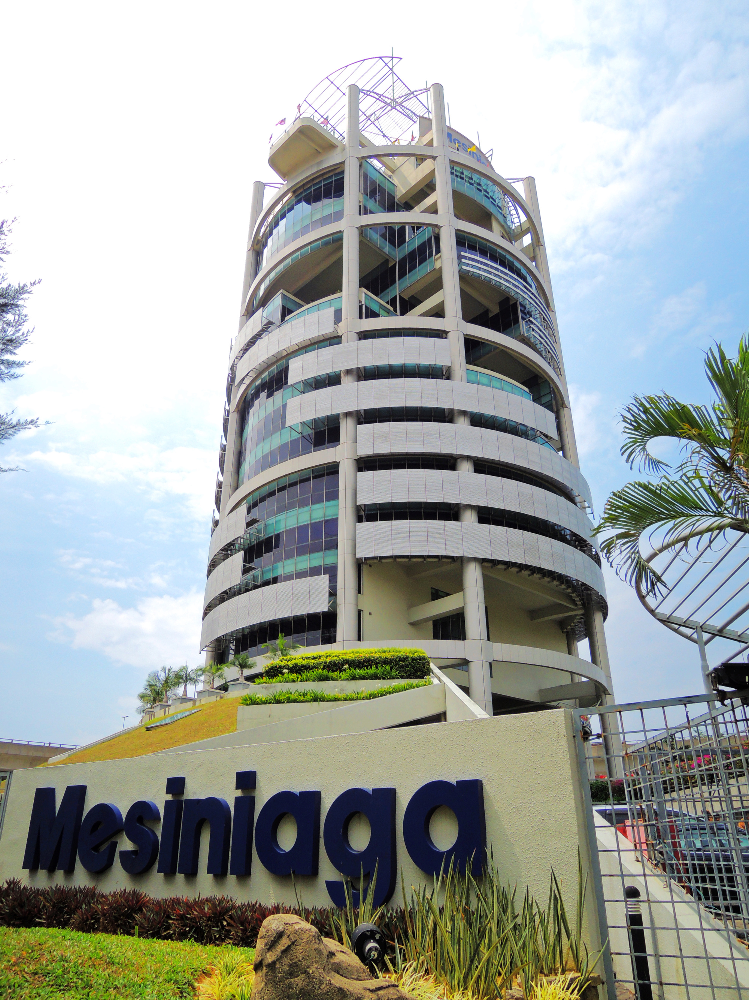
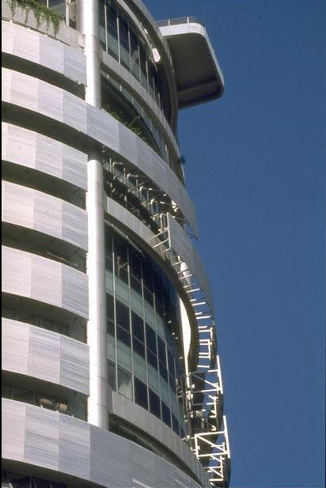
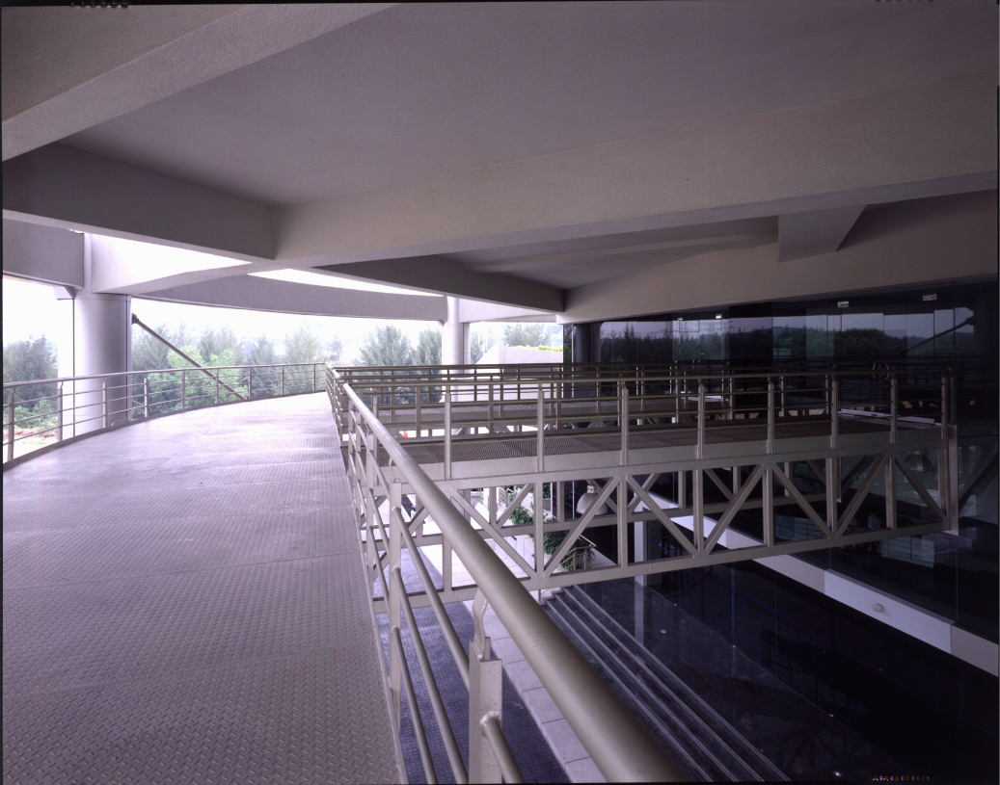
15
storeys, IBM Malaysia HQ
12,346
m² total floor area
East
service core, blocking the morning sun
1995
Aga Khan Award for Architecture
What the shading was worth, in money. At Yeang's request his engineers Norman Disney & Young recalculated the cooling load as if the same building had been built as a plain unshaded curtain-wall tower. Stripping the sunscreens and balcony shading added 125 kW of cooling load, US$160,000 to install, and US$42,000 every year to run. A design-stage figure, but third-party, quantified, and expressed as running cost rather than virtue.
SourcesMenara Mesiniaga 1995 Technical Review, Kamran Safamanesh, Aga Khan Award for Architecture.It also came in around a third cheaper per unit area than a comparable Cesar Pelli tower then under construction.
03 · Menara UMNO, Penang Built 1998
Wing walls that catch the wind.
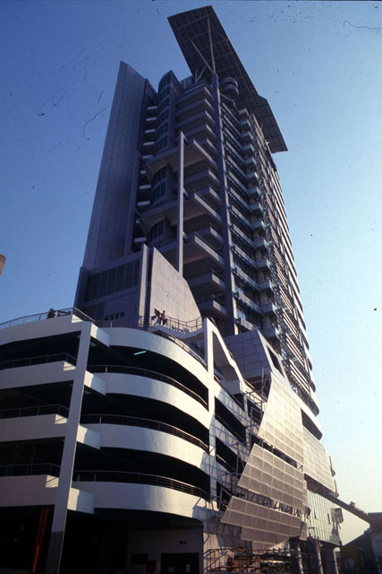
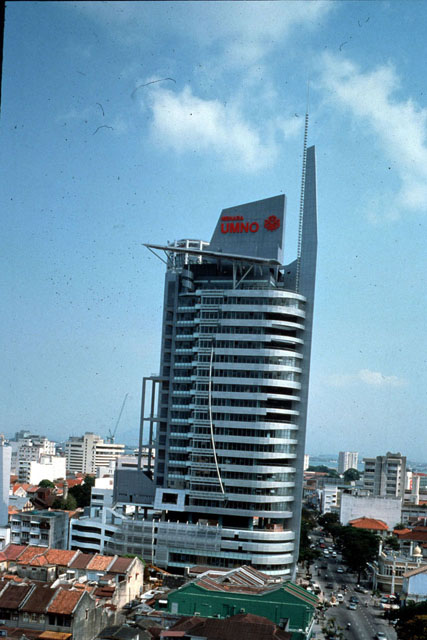
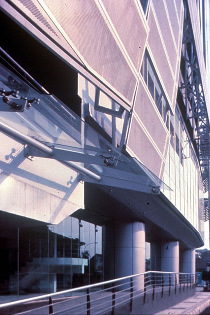
01
How a wing wall works
A vertical fin projecting from the façade catches wind arriving at an angle and funnels it into a high-pressure "wind pocket" against the wall. Open a door into that pocket and air is pushed through the floor plate rather than slipping past the building.
02
The occupant controls it
Windows and balcony doors are adjustable, so the rate and direction of ventilation is tuned floor by floor. Lift lobbies, stairs and lavatories are naturally ventilated and daylit throughout.
03
Core on the east again
Their own drawing is annotated "service cores on east provides shade in the morning". Second building, same move.
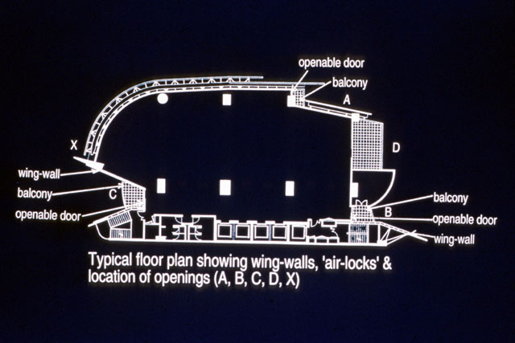
How it works in plan. The wing-walls (marked at X, C and B) project out from the façade. Wind arriving at an angle hits a wing-wall and is deflected into the corner behind it, building up pressure. The openable doors at A, B, C, D and X are positioned to sit in those high-pressure pockets, so opening one pushes air across the floor plate instead of letting it slide past the building. The balconies act as air-locks so the flow can be regulated.
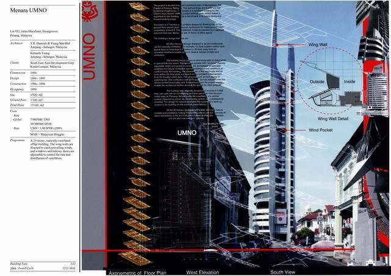
The detail, and the numbers. Right of centre, the Wing Wall Detail diagram labels Outside, Inside and the Wind Pocket itself. The panel also carries their own project data: 21 storeys, 15,166 m², USD 7.98m, occupied 1998. Click to enlarge and read it.
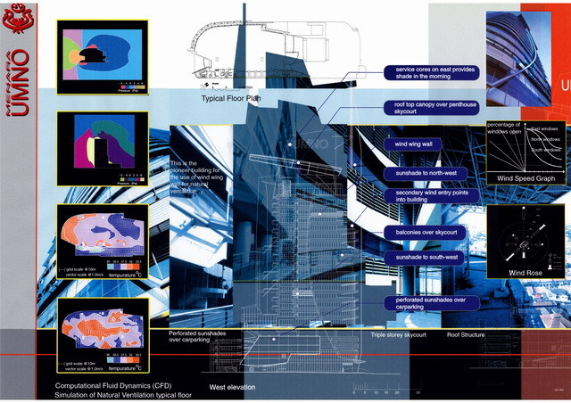
He was running CFD ventilation simulations and wind-rose studies in the 1990s. Worth knowing: the charge that he never did the analysis is simply wrong. What he never published is what the building actually achieved once occupied. Click to enlarge.
04 · Selangor Turf Club, Kuala Lumpur Built 1993
A roof built as a stack of leaves.
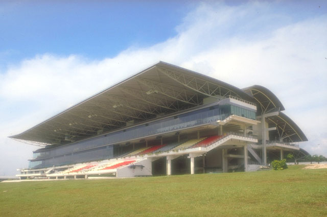
- 01
The Venturi roofThe roof is built as overlapping leaves with open louvres between them. Hot air rises and escapes at the top, which pulls cooler air in below, and the gaps are shaped so rain still cannot get through. The overhang shades the glass underneath.
- 02
Even the stables are passive700 stalls, naturally ventilated with roof ventilators. The strategy is applied to the whole complex, not just the showpiece.
- 03
He drew the line himselfThe independent reviewer records that this building is "not climatically designed, according to the architect, it is simply naturally ventilated." Thirty percent of the grandstand is air-conditioned. He does not claim everything he builds is bioclimatic.
30%
air-conditioned. The rest runs on the roof.
SourcesSelangor Turf Club 1998 Technical Review, Hana Alamuddin, Aga Khan Award for Architecture.The club moved here from the city-centre site now occupied by the Petronas Towers.
05 · National Library, Singapore Built 2004
Nine-metre blades, and daylight driven underground.
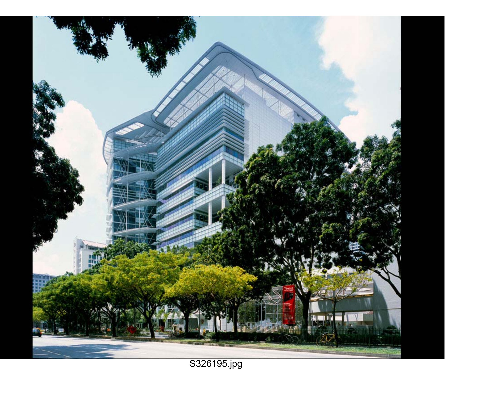
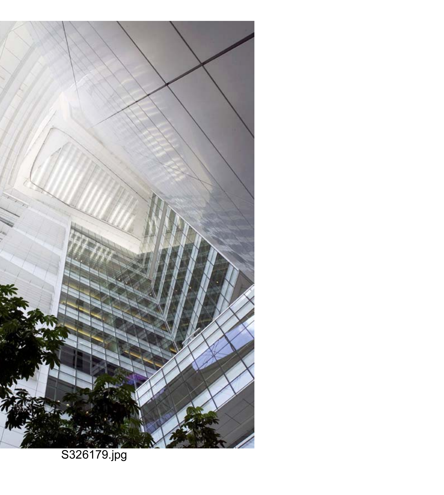
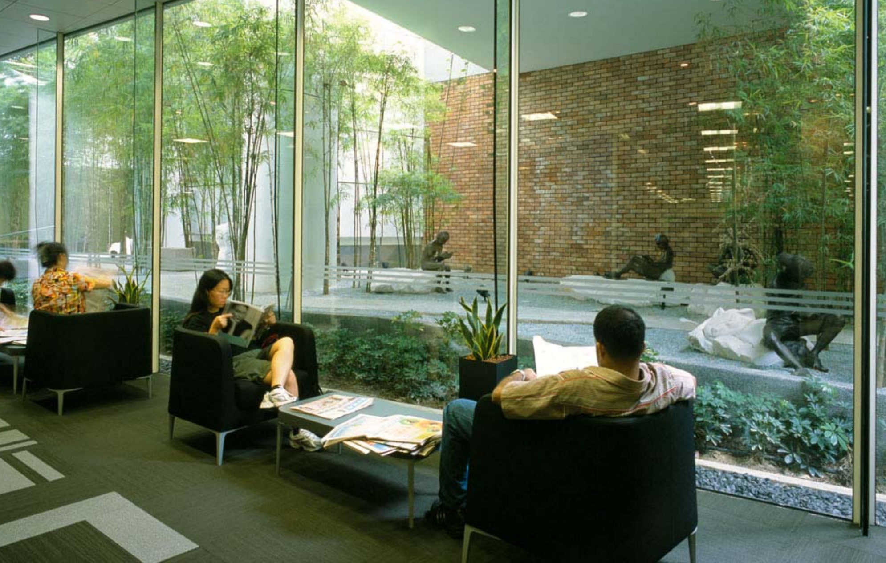
01
Nine-metre blades
Shading deep enough to be architecture rather than a screen. Two blocks split by a day-lit, naturally ventilated internal "street", bridged at the upper levels.
02
Eco-cells
Voids cut down through the building to bring daylight and natural ventilation to basement level. The ecological argument driven downwards, not just up the façade.
03
Three-metre trees in the sky courts
Real trees at height, on planted sky terraces, specified to add biodiversity to the site rather than to dress the elevation.

The whole method on one sheet. Click to enlarge — the lower-right diagram, "Composite of Thermal Buffers", is the clearest statement of the core-as-shield idea anywhere in his work.
Also on this panelApplied features include "Building Energy Embodiment Analysis" and "Design for Disassembly" — on a 2004 building, roughly fifteen years before either became normal practice.
06 · Solaris, Singapore Built 2011
1.5 kilometres of planting that never breaks.
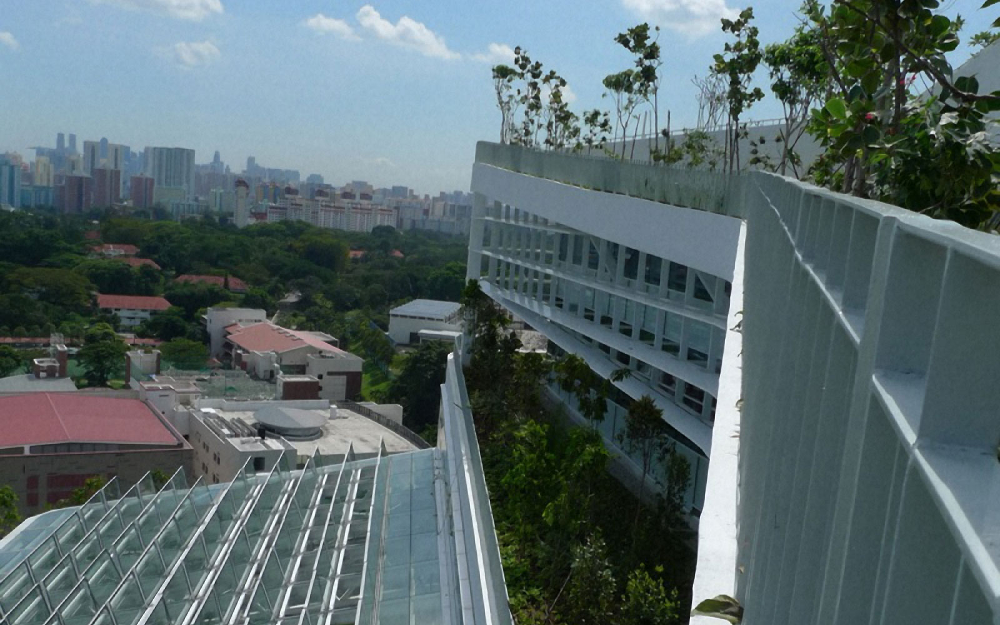
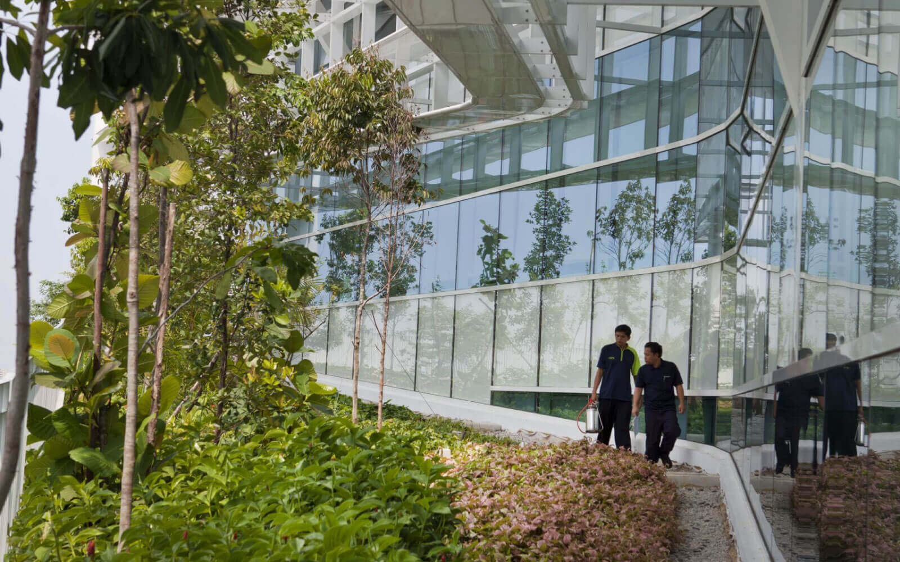
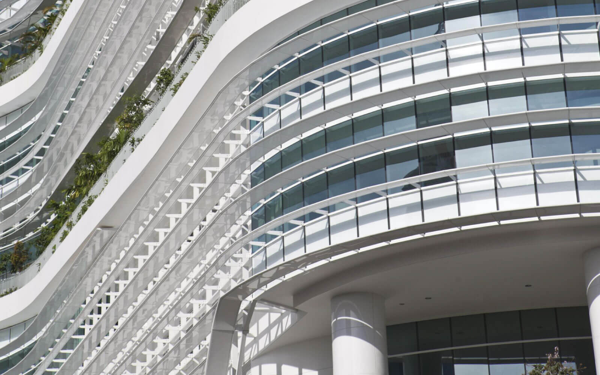
In contextone-north
From aboveRamp and service path
AtriumNaturally ventilated
On the ramp3 m wide, unbroken
1.5 km
continuous landscaped ramp, 3 m wide
8,363
m² total landscaped area
01
Continuity is the whole point
The ramp starts in the park at ground level, passes through a basement eco-cell and climbs unbroken to the roof gardens. The soil is never severed, so the ecological corridor genuinely climbs the building instead of being replicated on separate terraces.
02
The detail that makes it survive
A dedicated parallel service path runs alongside the ramp so gardeners never need access through the building. Most vertical planting fails on maintenance access. This solved it at design stage, and it is the single most transferable idea here.
03
Watered by what falls on it
Irrigation runs on rainwater harvested from the ramp's own perimeter drainage and the tower roof. In Singapore that works. In Riyadh it will not, and that is a difference worth holding on to.
Claimed, not measuredBCA Green Mark Platinum; a claimed 36% energy reduction against local precedent; ETTV 39 W/m².These are design and certification figures from the practice, not an independent metered audit. No long-term condition survey exists.
07 · EDITT Tower, Singapore Design 1998
A tower designed as a closed loop.
His most complete statement of what an ecological tower could be. Whatever happened to it commercially, the design content is the reason to study it: this is the full set of moves, applied at once, without compromise.
01
Half the surface is planted
Not a green wall applied to a façade, but a continuous vegetated ramp spiralling from street level upward, so planting and public route are the same thing. Solaris is this idea, built and tamed.
02
Water used more than once
Rainwater and greywater captured, treated and recirculated, with a claimed reuse rate of over 55%. Water is treated as a stock to be cycled, not a supply to be consumed.
03
Waste becomes fuel
On-site biogas generation from organic waste, plus photovoltaics. The building metabolises what it produces instead of exporting it. This is ecomimesis taken literally.
What to take from it. Three ideas survive translation to a desert: planting and circulation as one continuous element, water cycled rather than consumed, and waste treated as a resource stream. The living wall does not survive, for reasons we come to in chapter three. Study the loops, not the foliage.
Sourcesdesignboom; Inhabitat. Winner of the Ecological Design In The Tropics competition.Reuse and generation figures are design proposals, never built or measured.
08 · Works
Works.
Everything we found. The seven covered in this chapter are marked ●. Bracketed years are contested between sources. Where we could not establish whether something was built, it says so.
| Year | Project | Location | Status |
|---|
| 1981 | Plaza Atrium | Kuala Lumpur | Built |
| 1984 | Roof-Roof House ● | Selangor | Built |
| (1985) | Menara Boustead | Kuala Lumpur | Built |
| (1985) | IBM Plaza / Plaza VADS | Kuala Lumpur | Built |
| 1992 | Menara Mesiniaga ● | Subang Jaya | Built |
| 1993 | Selangor Turf Club ● | Kuala Lumpur | Built |
| 1994 | MBf Tower | Penang | Built |
| 1998 | Menara UMNO / JKP Tower ● | Penang | Built |
| 1998 | Menara AmBank | Kuala Lumpur | Built |
| 1998 | Guthrie Pavilion | Shah Alam | Built |
| 1998 | EDITT Tower ● | Singapore | Unbuilt |
| 2004 | National Library ● | Singapore | Built |
| (2005) | K Tower / Al Asima | Kuwait City | Unbuilt |
| 2010 | DiGi Technology Operation Centre | Shah Alam | Built |
| 2011 | Solaris, Fusionopolis 2B ● | Singapore | Built |
| — | Spire Edge Tower | Manesar, India | Built |
| — | Suasana Putrajaya 2C5 | Putrajaya | Built |
| — | Ganendra Art House | Petaling Jaya | Built |
| — | TTDI Plaza | Kuala Lumpur | Built |
| — | Ibu Pejabat Kesadar | Gua Musang | Built |
| — | Bukit Bintang Park Roof Canopy | Kuala Lumpur | Built |
| — | Mewah Oils | Malaysia | Built |
| — | Basis Bay Cyberjaya DC2 | Malaysia | Built |
| — | Great Ormond Street Hospital | London | Built |
| — | Elephant & Castle Eco-Towers | London | Unbuilt |
| — | Jabal Omar | Mecca | Unbuilt |
| — | Mixed-use tower | Dubai | Unbuilt |
| — | Nagoya Tower | Japan | Unbuilt |
| — | Xiong'an Station | China | No info |
| — | HKU Human Research Tower | Hong Kong | No info |
| — | Coronation Square T3 | — | No info |
| — | Gangxia Residence | Shenzhen | No info |
| — | Idaman Residence | Malaysia | No info |
| — | CY Cultural Building | — | No info |
| — | Millennium Monument | — | No info |
| — | Port Apartment | — | No info |
| — | Kowloon Masterplan | Hong Kong | No info |
| — | SOMA Masterplan | Bangalore | No info |
| — | NITTE Masterplan | India | No info |
| — | UM Masterplan | Malaysia | No info |
| — | Mutiara Masterplan | Penang | No info |
| — | Macau Waterfront | Macau | No info |
| — | Sepang Waterfront | Malaysia | No info |
Where to digarchnet.org — the Aga Khan archive. The best source, and the only place with independent review reports. Search "Yeang".web.archive.org — the old trhamzahyeang.com holds far more project material than the current site.skyscrapercenter.com — verified heights, dates and floor counts.Our notes on every project: research/ken-yeang/04-projects-catalogue.md.
Seven projects, one pattern
The built ones are the quiet ones.
Everything with sky courts, deep shading and a displaced core got built and is still standing. Everything with living walls, biogas and closed water loops stayed on paper. Take the moves from the built half, and the ambition from the unbuilt half.
×